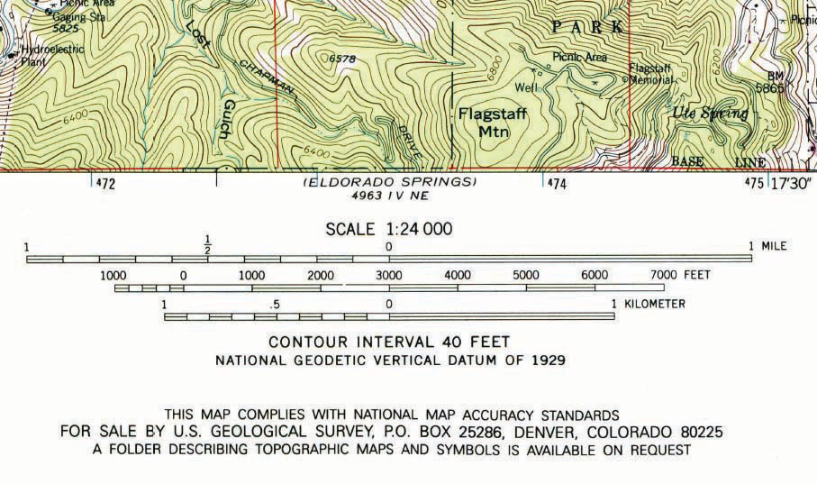
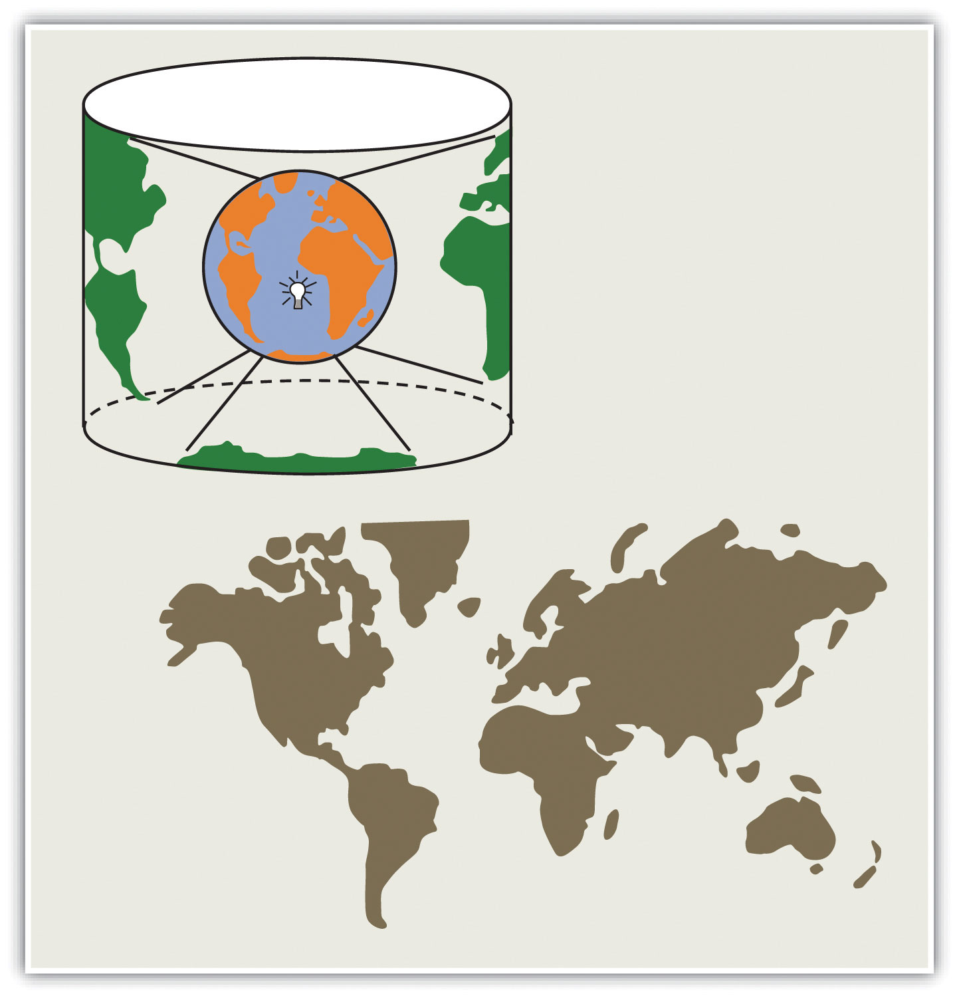
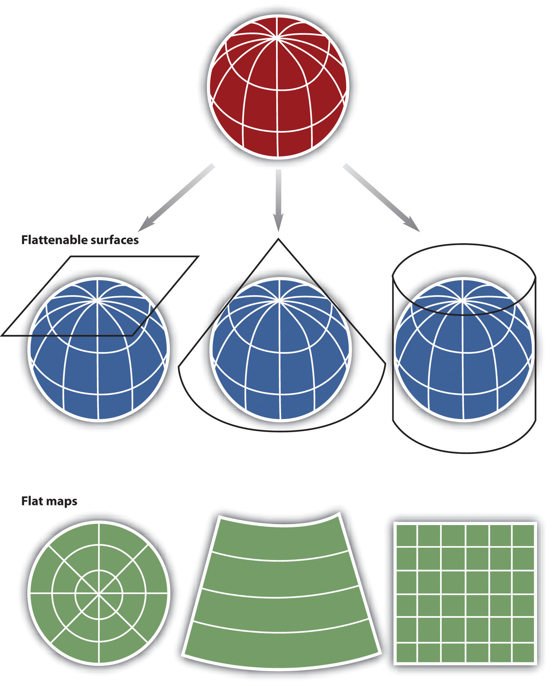

Maps and mapping are essential components of any and all geographic information systems (GISs). For instance, maps constitute both the input and output of a GIS. Hence a GIS utilizes many concepts and themes from cartographyThe formal study of maps, mapping and map making., the formal study of maps and mapping. Therefore, in order for us to become proficient with GISs, we need to learn more about cartography, maps, and mapping. The first part of this chapter defines what a map is and describes a few key map types. Next, cartographic or mapping conventions are discussed with particular emphasis placed upon map scale, coordinate systems, and map projections. The chapter concludes with a discussion of the process of map abstraction as it relates to GISs. This chapter provides the foundations for working with, integrating, and making maps with GISs.
Maps are among the most compelling forms of information for several reasons. Maps are artistic. Maps are scientific. Maps preserve history. Maps clarify. Maps reveal the invisible. Maps inform the future. Regardless of the reason, maps capture the imagination of people around the world. As one of the most trusted forms of information, map makers and geographic information system (GIS) practitioners hold a considerable amount of power and influence (Wood 1992; Monmonier 1996).Wood, D. 1992. The Power of Maps. New York: Guilford., Monmonier, M. 1996. How to Lie with Maps. Chicago: University of Chicago Press. Therefore, understanding and appreciating maps and how maps convey information are important aspects of GISs. The appreciation of maps begins with exploring various map types.
So what exactly is a map? Like GISs, there are probably just as many definitions of maps as there are people who use and make them (see Muehrcke and Muehrcke 1998).Muehrcke, P., and J. Muehrcke. 1998. Map Use. Madison, WI: JP Publications. For starters, we can define a map simply as a representation of the world. Such maps can be stored in our brain (i.e., mental maps), they can be printed on paper, or they can appear online. Notwithstanding the actual medium of the map (e.g., our fleeting thoughts, paper, or digital display), maps represent and describe various aspects of the world. For purposes of clarity, the three types of maps are the reference map, the thematic map, and the dynamic map.
The primary purpose of a reference mapThe family of maps that are used to locate features on the surface of the earth. is to deliver location information to the map user. Geographic features and map elements on a reference map tend to be treated and represented equally. In other words, no single aspect of a reference map takes precedent over any other aspect. Moreover, reference maps generally represent geographic reality accurately. Examples of some common types of reference maps include topographic maps such as those created by the United States Geological Survey (USGS; see http://topomaps.usgs.gov) and image maps obtained from satellites or aircraft that are available through online mapping services.
Figure 2.1 USGS Topographic Map of Boulder, CO

Figure 2.2 Image Map of Palm Island, Dubai, from NASA

The accuracy of a given reference map is indeed critical to many users. For instance, local governments need accurate reference maps for land use, zoning, and tax purposes. National governments need accurate reference maps for political, infrastructure, and military purposes. People who depend on navigation devices like global positioning system (GPS) units also need accurate and up-to-date reference maps in order to arrive at their desired destinations.
Contrasting the reference map are thematic maps. As the name suggests, thematic mapsThe family of maps that are about a particular topic or theme. are concerned with a particular theme or topic of interest. While reference maps emphasize the location of geographic features, thematic maps are more concerned with how things are distributed across space. Such things are often abstract concepts such as life expectancy around the world, per capita gross domestic product (GDP) in Europe, or literacy rates across India. One of the strengths of mapping, and in particular of thematic mapping, is that it can make such abstract and invisible concepts visible and comparable on a map.
Figure 2.3 World Life Expectancies

Figure 2.4 European GDP

Figure 2.5 Indian Literacy Rates

It is important to note that reference and thematic maps are not mutually exclusive. In other words, thematic maps often contain and combine geographical reference information, and conversely, reference maps may contain thematic information. What is more, when used in conjunction, thematic and reference maps often complement each other.
For example, public health officials in a city may be interested in providing equal access to emergency rooms to the city’s residents. Insights into this and related questions can be obtained through visual comparisons of a reference map that shows the locations of emergency rooms across the city to thematic maps of various segments of the population (e.g., households below poverty, percent elderly, underrepresented groups).
Within the context of a GIS, we can overlayThe process of integrating two or more map layers on the same map. the reference map of emergency rooms directly on top of the population maps to see whether or not access is uniform across neighborhood types. Clearly, there are other factors to consider when looking at emergency room access (e.g., access to transport), but through such map overlays, underserved neighborhoods can be identified.
Figure 2.6 Map Overlay Process

When presented in hardcopy format, both reference and thematic maps are static or fixed representations of reality. Such permanence on the page suggests that geography and the things that we map are also in many ways fixed or constant. This is far from reality. The integration of GISs with other forms of information technology like the Internet and mobile telecommunications is rapidly changing this view of maps and mapping, as well as geography at large.
The diffusion of GISs and the popularity of online mapping tools and applications speak to this shift in thinking about maps and map use. In this regard, it is worthwhile to discuss the diffusion of dynamic maps. Dynamic mapsInteractive and changeable representations of the earth and its resident phenomena. are simply changeable or interactive representations of the earth. Dynamic mapping refers more to how maps are used and delivered to the map user today (e.g., online, via mobile phone) than to the content of the map itself. Both reference and thematic maps can be dynamic in nature, and such maps are an integral component to any GIS. The key point about dynamic maps is that more and more people, not just GIS professionals, have access to such maps.
Unlike a hardcopy map that has features and elements users cannot modify or change, dynamic maps encourage and sometimes require user interaction. Such interaction can include changing the scale or visible area by zooming in or zooming out, selecting which features or layers to include or to remove from a map (e.g., roads, imagery), or even starting and stopping a map animation.
Figure 2.7 Google Maps on an iPhone

Just as dynamic maps will continue to evolve and require more user interaction in the future, map users will demand more interactive map features and controls. As this democratization of maps and mapping continues, the geographic awareness and map appreciation of map users will also increase. Therefore, it is of critical importance to understand the nature, form, and content of maps to support the changing needs, demands, and expectations of map users in the future.
All map users and map viewers have certain expectations about what is contained on a map. Such expectations are formed and learned from previous experience by working with maps. It is important to note that such expectations also change with increased exposure to maps. Understanding and meeting the expectations of map viewers is a challenging but necessary task because such expectations provide a starting point for the creation of any map.
The central purpose of a map is to provide relevant and useful information to the map user. In order for a map to be of value, it must convey information effectively and efficiently. Mapping conventions facilitate the delivery of information in such a manner by recognizing and managing the expectations of map users. Generally speaking, mapping or cartographic conventions refer to the accepted rules, norms, and practices behind the making of maps. One of the most recognized mapping conventions is that “north is up” on most maps. Though this may not always be the case, many map users expect north to be oriented or to coincide with the top edge of a map or viewing device like a computer monitor.
Several other formal and informal mapping conventions and characteristics, many of which are taken for granted, can be identified. Among the most important cartographic considerations are map scale, coordinate systems, and map projections. Map scale is concerned with reducing geographical features of interest to manageable proportions, coordinate systems help us define the positions of features on the surface of the earth, and map projections are concerned with moving from the three-dimensional world to the two dimensions of a flat map or display, all of which are discussed in greater detail in this chapter.
The world is a big place…really big. One of the challenges behind mapping the world and its resident features, patterns, and processes is reducing it to a manageable size. What exactly is meant by “manageable” is open to discussion and largely depends on the purpose and needs of the map at hand. Nonetheless, all maps reduce or shrink the world and its geographic features of interest by some factor. Map scaleThe factor by which phenomena on the surface of the earth are reduced in order to be shown on a map. refers to the factor of reduction of the world so it fits on a map.
Map scale can be represented by text, a graphic, or some combination of the two. For example, it is common to see “one inch represents one kilometer” or something similar written on a map to give map users an idea of the scale of the map. Map scale can also be portrayed graphically with what is called a scale bar. Scale bars are usually used on reference maps and allow map users to approximate distances between locations and features on a map, as well as to get an overall idea of the scale of the map.
Figure 2.9 Map Scale from a United States Geological Survey (USGS) Topographic Map
The representative fraction (RF) describes scale as a simple ratio. The numerator, which is always set to one (i.e., 1), denotes map distance and the denominator denotes ground or “real-world” distance. One of the benefits of using a representative fraction to describe scale is that it is unit neutral. In other words, any unit of measure can be used to interpret the map scale. Consider a map with an RF of 1:10,000. This means that one unit on the map represents 10,000 units on the ground. Such units could be inches, centimeters, or even pencil lengths; it really does not matter.
Map scales can also be described as either “small” or “large.” Such descriptions are usually made in reference to representative fractions and the amount of detail represented on a map. For instance, a map with an RF of 1:1,000 is considered a large-scale map when compared to a map with an RF of 1:1,000,000 (i.e., 1:1,000 > 1:1,000,000). Furthermore, while the large-scale map shows more detail and less area, the small-scale map shows more area but less detail. Clearly, determining the thresholds for small- or large-scale maps is largely a judgment call.
All maps possess a scale, whether it is formally expressed or not. Though some say that online maps and GISs are “scaleless” because we can zoom in and out at will, it is probably more accurate to say that GISs and related mapping technology are multiscalar. Understanding map scale and its overall impact on how the earth and its features are represented is a critical part of both map making and GISs.
Just as all maps have a map scale, all maps have locations, too. Coordinate systemsFrameworks used to determine position on the surface of the earth. are frameworks that are used to define unique positions. For instance, in geometry we use x (horizontal) and y (vertical) coordinates to define points on a two-dimensional plane. The coordinate system that is most commonly used to define locations on the three-dimensional earth is called the geographic coordinate system (GCS)The three-dimensional coordinate system commonly used to define locations on the earth’s surface., and it is based on a sphere or spheroid. A spheroid (a.k.a. ellipsoid) is simply a sphere that is slightly wider than it is tall and approximates more closely the true shape of the earth. Spheres are commonly used as models of the earth for simplicity.
The unit of measure in the GCS is degrees, and locations are defined by their respective latitude and longitude within the GCS. Latitude is measured relative to the equator at zero degrees, with maxima of either ninety degrees north at the North Pole or ninety degrees south at the South Pole. Longitude is measured relative to the prime meridian at zero degrees, with maxima of 180 degrees west or 180 degrees east.
Note that latitude and longitude can be expressed in degrees-minutes-seconds (DMS) or in decimal degrees (DD). When using decimal degrees, latitudes above the equator and longitudes east of the prime meridian are positive, and latitudes below the equator and longitudes west of the prime meridian are negative (see the following table for examples).
| Nominal location | Absolute location (DMS) | Absolute location (DD) |
|---|---|---|
| Los Angeles, US | 34° 3′ North, 118° 15′ West | +34.05, –118.25 |
| Mumbai, India | 18° 58′ North, 72° 49′ East | +18.975, +72.8258 |
| Sydney, Australia | 33° 51′ South, 151° 12′ East | –33.859, 151.211 |
| Sao Paolo, Brazil | 23° 33′ South, 46° 38′ West | –23.550, –46.634 |
Converting from DMS to DD is a relatively straightforward exercise. For example, since there are sixty minutes in one degree, we can convert 118° 15 minutes to 118.25 (118 + 15/60). Note that an online search of the term “coordinate conversion” will return several coordinate conversion tools.
When we want to map things like mountains, rivers, streets, and buildings, we need to define how the lines of latitude and longitude will be oriented and positioned on the sphere. A datum serves this purpose and specifies exactly the orientation and origins of the lines of latitude and longitude relative to the center of the earth or spheroid.
Depending on the need, situation, and location, there are several datums to choose from. For instance, local datums try to match closely the spheroid to the earth’s surface in a local area and return accurate local coordinates. A common local datum used in the United States is called NAD83 (i.e., North American Datum of 1983). For locations in the United States and Canada, NAD83 returns relatively accurate positions, but positional accuracy deteriorates when outside of North America.
The global WGS84 datum (i.e., World Geodetic System of 1984) uses the center of the earth as the origin of the GCS and is used for defining locations across the globe. Because the datum uses the center of the earth as its origin, locational measurements tend to be more consistent regardless where they are obtained on the earth, though they may be less accurate than those returned by a local datum. Note that switching between datums will alter the coordinates (i.e., latitude and longitude) for all locations of interest.
Previously we noted that the earth is really big. Not only is it big, but it is a big round spherical shape called a spheroid. A globe is a very common and very good representation of the three-dimensional, spheroid earth. One of the problems with globes, however, is that they are not very portable (i.e., you cannot fold a globe and put in it in your pocket), and their small scale makes them of limited practical use (i.e., geographic detail is sacrificed). To overcome these issues, it is necessary to transform the three-dimensional shape of the earth to a two-dimensional surface like a flat piece of paper, computer screen, or mobile device display in order to obtain more useful map forms and map scales. Enter the map projection.
Map projectionsThe mathematical formulae used to tranform locations from a three-dimensional, spherical coordinate system to a two-dimensional planar system. refer to the methods and procedures that are used to transform the spherical three-dimensional earth into two-dimensional planar surfaces. Specifically, map projections are mathematical formulas that are used to translate latitude and longitude on the surface of the earth to x and y coordinates on a plane. Since there are an infinite number of ways this translation can be performed, there are an infinite number of map projections. The mathematics behind map projections are beyond the scope of this introductory overview (but see Robinson et al. 1995; Muehrcke and Muehrcke 1998),Muehrcke, P., and J. Muehrcke. 1998. Map Use. Madison, WI: JP Publications. and for simplicity, the following discussion focuses on describing types of map projections, the distortions inherent to map projections, and the selection of appropriate map projections.
To illustrate the concept of a map projection, imagine that we place a light bulb in the center of a translucent globe. On the globe are outlines of the continents and the lines of longitude and latitude called the graticule. When we turn the light bulb on, the outline of the continents and the graticule will be “projected” as shadows on the wall, ceiling, or any other nearby surface. This is what is meant by map “projection.”
Figure 2.10 The Concept of Map “Projection”
Within the realm of maps and mapping, there are three surfaces used for map projections (i.e., surfaces on which we project the shadows of the graticule). These surfaces are the plane, the cylinder, and the cone. Referring again to the previous example of a light bulb in the center of a globe, note that during the projection process, we can situate each surface in any number of ways. For example, surfaces can be tangential to the globe along the equator or poles, they can pass through or intersect the surface, and they can be oriented at any number of angles.
Figure 2.11 Map Projection Surfaces
In fact, naming conventions for many map projections include the surface as well as its orientation. For example, as the name suggests, “planar” projections use the plane, “cylindrical” projections use cylinders, and “conic” projections use the cone. For cylindrical projections, the “normal” or “standard” aspect refers to when the cylinder is tangential to the equator (i.e., the axis of the cylinder is oriented north–south). When the axis of the cylinder is perfectly oriented east–west, the aspect is called “transverse,” and all other orientations are referred to as “oblique.” Regardless the orientation or the surface on which a projection is based, a number of distortions will be introduced that will influence the choice of map projection.
When moving from the three-dimensional surface of the earth to a two-dimensional plane, distortions are not only introduced but also inevitable. Generally, map projections introduce distortions in distance, angles, and areas. Depending on the purpose of the map, a series of trade-offs will need to be made with respect to such distortions.
Map projections that accurately represent distances are referred to as equidistant projections. Note that distances are only correct in one direction, usually running north–south, and are not correct everywhere across the map. Equidistant maps are frequently used for small-scale maps that cover large areas because they do a good job of preserving the shape of geographic features such as continents.
Maps that represent angles between locations, also referred to as bearings, are called conformal. Conformal map projections are used for navigational purposes due to the importance of maintaining a bearing or heading when traveling great distances. The cost of preserving bearings is that areas tend to be quite distorted in conformal map projections. Though shapes are more or less preserved over small areas, at small scales areas become wildly distorted. The Mercator projection is an example of a conformal projection and is famous for distorting Greenland.
As the name indicates, equal area or equivalent projections preserve the quality of area. Such projections are of particular use when accurate measures or comparisons of geographical distributions are necessary (e.g., deforestation, wetlands). In an effort to maintain true proportions in the surface of the earth, features sometimes become compressed or stretched depending on the orientation of the projection. Moreover, such projections distort distances as well as angular relationships.
As noted earlier, there are theoretically an infinite number of map projections to choose from. One of the key considerations behind the choice of map projection is to reduce the amount of distortion. The geographical object being mapped and the respective scale at which the map will be constructed are also important factors to think about. For instance, maps of the North and South Poles usually use planar or azimuthal projections, and conical projections are best suited for the middle latitude areas of the earth. Features that stretch east–west, such as the country of Russia, are represented well with the standard cylindrical projection, while countries oriented north–south (e.g., Chile, Norway) are better represented using a transverse projection.
If a map projection is unknown, sometimes it can be identified by working backward and examining closely the nature and orientation of the graticule (i.e., grid of latitude and longitude), as well as the varying degrees of distortion. Clearly, there are trade-offs made with regard to distortion on every map. There are no hard-and-fast rules as to which distortions are more preferred over others. Therefore, the selection of map projection largely depends on the purpose of the map.
Within the scope of GISs, knowing and understanding map projections are critical. For instance, in order to perform an overlay analysis like the one described earlier, all map layers need to be in the same projection. If they are not, geographical features will not be aligned properly, and any analyses performed will be inaccurate and incorrect. Most GISs include functions to assist in the identification of map projections, as well as to transform between projections in order to synchronize spatial data. Despite the capabilities of technology, an awareness of the potential and pitfalls that surround map projections is essential.
As previously discussed, maps are a representation of the earth. Central to this representation is the reduction of the earth and its features of interest to a manageable size (i.e., map scale) and its transformation into a useful two-dimensional form (i.e., map projection). The choice of both map scale and, to a lesser extent, map projection will influence the content and shape of the map.
In addition to the seemingly objective decisions made behind the choices of map scale and map projection are those concerning what to include and what to omit from the map. The purpose of a map will certainly guide some of these decisions, but other choices may be based on factors such as space limitations, map complexity, and desired accuracy. Furthermore, decisions about how to classify, simplify, or exaggerate features and how to symbolize objects of interest simultaneously fall under the realms of art and science (Slocum et al. 2004).Slocum, T., R. McMaster, F. Kessler, and H. Hugh. 2008. Thematic Cartography and Geovisualization. Upper Saddle River, NJ: Prentice Hall.
The process of moving from the “real world” to the world of maps is referred to as map abstractionThe process by which real-world phenomena are transformed into features on a map.. This process not only involves making choices about how to represent features but also, more important with regard to geographic information systems (GISs), requires us to be explicit, consistent, and precise in terms of defining and describing geographical features of interest. Failure to be explicit, consistent, and precise will return incorrect; inconsistent; and error-prone maps, analyses, and decisions based on such maps and GISs. This final section discusses map abstraction in terms of geographical features and their respective graphical representation.
One of the most pressing environmental issues facing the world is deforestation. Generally, deforestation refers to the reduction of forest area. This is an important issue because it has possible implications for climate change, global warming, biodiversity, and the water balance of the earth, among other things. In the last century, deforestation has increased at an alarming rate and is mostly attributed to human activity. Mapping forests regularly with a GIS is a logical way to monitor deforestation and has the potential to inform policies regarding forest conservation efforts. Easy enough, so let’s get started.
So what exactly is a forest? How do we know where a forest begins and where it ends? How can naturally caused forest fires be differentiated from those started by humans? Can a forest exist in a swamp or wetland? For that matter, what is the difference between a swamp and wetland? Such questions are not trivial in the context of mapping and GISs. In fact, consistent and precise definitions of features like forests or swamps increase the reliability and efficiency of maps, mapping, and analysis with GISs.
Figure 2.12 Deforestation in the Amazon: 2001

Figure 2.13 Deforestation in the Amazon: 2009

Within the realm of maps, cartography, and GISs, the world is made up of various features or entities. Such entities include but are not restricted to fire hydrants, caves, roads, rivers, lakes, hills, valleys, oceans, and the occasional barn. Moreover, such features have a form, and more precisely, a geometric form. For instance, fire hydrants and geysers are considered point-like features; rivers and streams are linear features; and lakes, countries, and forests are areal features.
Features can also be categorized as either discrete or continuous. Discrete featuresPhenomena that when represented on a map have clearly defined boundaries. are well defined and are easy to locate, measure, and count, and their edges or boundaries are readily defined. Examples of discrete features in a city include buildings, roads, traffic signals, and parks. Continuous featuresPhenomena that lack clearly defined boundaries., on the other hand, are less well defined and exist across space. The most commonly cited examples of continuous features are temperature and elevation. Changes in both temperature and elevation tend to be gradual over relatively large areas.
Geographical features also have several characteristics, traits, or attributes that may or may not be of interest. For instance, to continue the deforestation example, determining whether a forest is a rainforest or whether a forest is in a protected park may be important. More general attributes may include measurements such as tree density per acre, average canopy height in meters, or proportions like percent palm trees or invasive species per hectare in the forest.
Notwithstanding the purpose of the map or GIS project at hand, it is critical that definitions of features are clear and remain consistent. Similarly, it is important that the attributes of features are also consistently defined, measured, and reported in order to generate accurate and effective maps in an efficient manner. Defining features and attributes of interest is often an iterative process of trial and error. Being able to associate a feature with a particular geometric form and to determine the feature type are central to map abstraction, facilitate mapping, and the application of GISs.
The shape and content of maps vary according to purpose, need, and resources, among other factors. What is common to most maps, and in particular to those within a GIS, is that they are graphical representations of reality. Put another way, various graphical symbols are used to represent geographical features or entities. Annotation or text is also commonly used on maps and facilitates map interpretation. Learning about map content and map generalization is important because they serve as the building blocks for spatial data that are used within a GIS.
Building upon the previous discussion about the geometric form of geographic features, maps typically rely on three geometric objects: the point, the line, and the polygon or area. A point is defined by x and y coordinates, a line is defined by two points, and a polygon is defined by a minimum of three points. The important thing to note is that the definition of a point is analogous to a location that is defined by longitude and latitude. Furthermore, since lines and polygons are made up of points, location information (i.e., x and y, or longitude and latitude, coordinates) is intrinsic to points, lines, and polygons.
Figure 2.14 Geographic Features as Points, Lines, and Polygons

Both simple and complex maps can be made using these three relatively simple geometric objects. Additionally, by changing the graphical characteristics of each object, an infinite number of mapping possibilities emerge. Such changes can be made to the respective size, shape, color, and patterns of points, lines, and polygons. For instance, different sized points can be used to reflect variations in population size, line color or line size (i.e., thickness) can be used to denote volume or the amount of interaction between locations, and different colors and shapes can be used to reflect different values of interest.
Figure 2.15 Variations in the Graphical Parameters of Points, Lines, and Polygons

Figure 2.16

Complementing the graphical elements described previously is annotation or text. Annotation is used to identify particular geographic features, such as cities, states, bodies of water, or other points of interest. Like the graphical elements, text can be varied according to size, orientation, or color. There are also numerous text fonts and styles that are incorporated into maps. For example, bodies of water are often labeled in italics.
Another map element that deserves to be mentioned and that combines both graphics and text is the map legend or map key. A map legendA common component of a map that facilitiates interpretation and understanding. provides users information about the how geographic information is represented graphically. Legends usually consist of a title that describes the map, as well as the various symbols, colors, and patterns that are used on the map. Such information is often vital to the proper interpretation of a map.
As more features and graphical elements are put on a given map, the need to generalize such features arises. Map generalizationThe process by which real-world features are simplified in order to be represented on a map. refers to the process of resolving conflicts associated with too much detail, too many features, or too much information to map. In particular, generalization can take several forms (Buttenfield and McMaster 1991):Buttenfield, B., and R. McMaster. 1991. Map Generalization. Harlow, England: Longman.
Determining which aspects of generalization to use is largely a matter of personal preference, experience, map purpose, and trial and error. Though there are general guidelines about map generalization, there are no universal standards or requirements with regard to the generalization of maps and mapping. It is at this point that cartographic and artistic license, prejudices and biases, and creativity and design sense—or lack thereof—emerge to shape the map.
Making a map and, more generally, the process of mapping involve a range of decisions and choices. From the selection of the appropriate map scale and map projection to deciding which features to map and to omit, mapping is a complex blend of art and science. In fact, many historical maps are indeed viewed like works of art, and rightly so. Learning about the scale, shape, and content of maps serves to increase our understanding of maps, as well as deepen our appreciation of maps and map making. Ultimately, this increased geographical awareness and appreciation of maps promotes the sound and effective use and application of a GIS.
Image maps, in large part derived from satellites, are ubiquitous. Such maps can be found on the news, the Internet, in your car, and on your mobile phone. What’s more is that such images are in living color and of very high resolution. Not long ago, such image maps from satellites were the sole domain of meteorologists, local weather forecasters, and various government agencies. Public access to such images was pretty much limited to the evening news.
Technological advances in imaging technology, in conjunction with the commercialization of space flight, opened the door for companies like GeoEye (http://www.geoeye.com) and DigitalGlobe (http://www.digitalglobe.com) to provide satellite imagery and maps to the masses at the turn of the twenty-first century. With online mapping services such as Google Earth providing free and user-friendly access to such images, a revolution in maps and mapping was born.
Image maps now provide geographic context for nightly news stories around the world, serve as a backdrop to local real estate searches and driving directions, and are also used for research purposes . The popularity and widespread use of such images speaks not only to recent technological advances and innovations but also, perhaps more important, to the geographer in us all.
Figure 2.17 The Inauguration of Barack Obama from Space

GeoEye 2008.